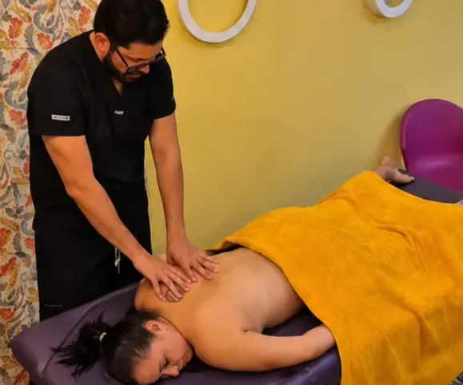
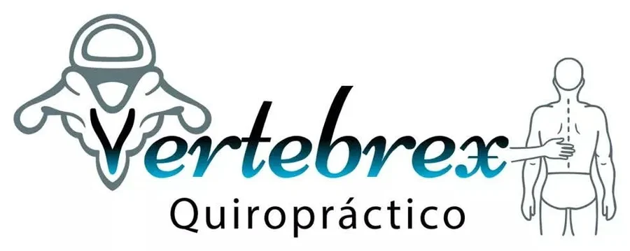
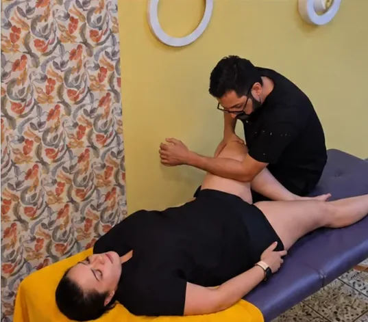
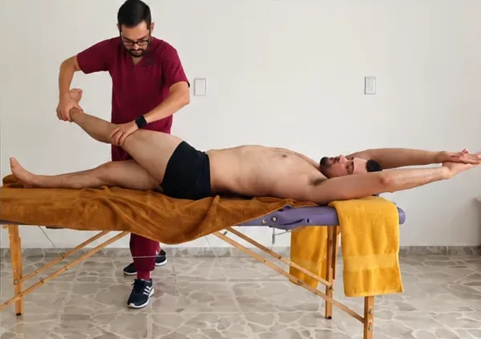

Terapia Superior
De cadera a espalda
$800MXN50 min

Tu bienestar es mi prioridad.
Descarga muscular, liberación articular, estiramientos y alfabiotismo.
Alex MarLop · Fundador y terapeuta manual especializado en bienestar musculoesquelético

De cadera a espalda

De cadera a piernas

Cuerpo completo
Cada sesión termina con ejercicios para que sigas avanzando en casa.
Elige tu terapia, el día y una hora libre. La hora que apartes te la confirmo por WhatsApp.